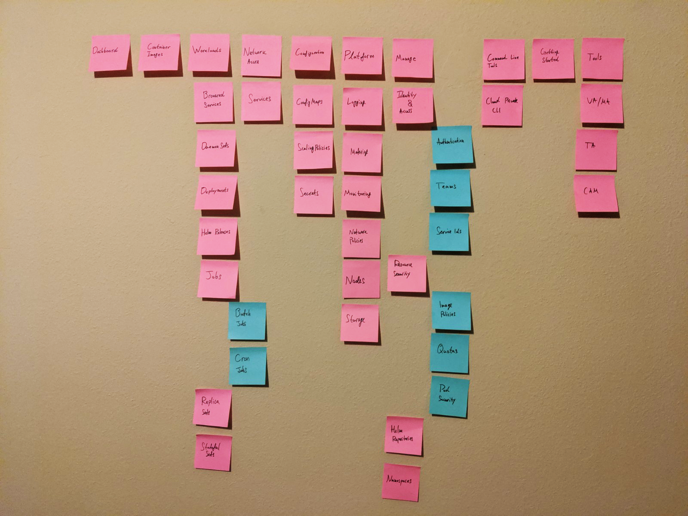
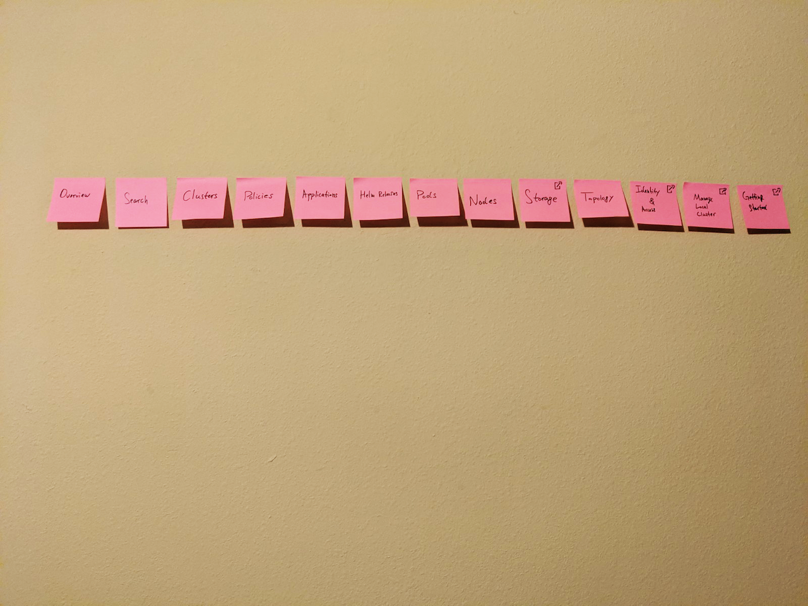
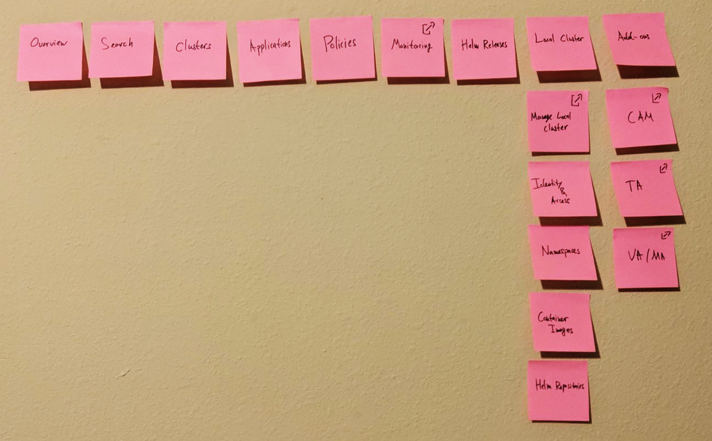
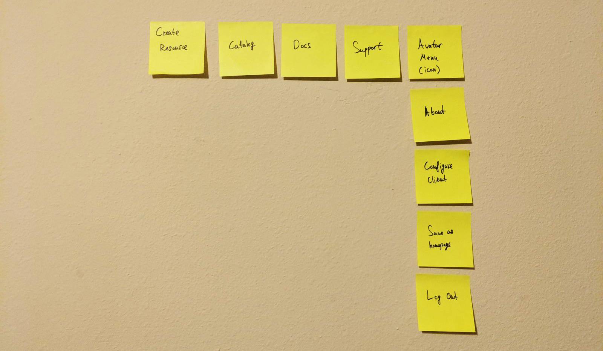
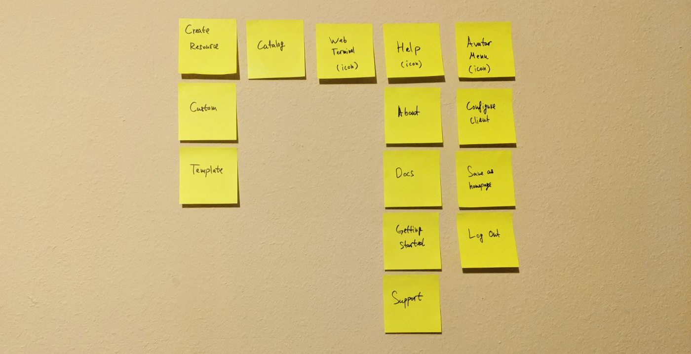
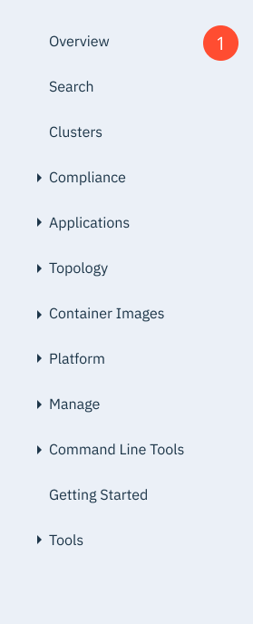

- Date: January 2019 - April 2019
- Role: UX Designer
- Work Setting: Team of 9
My design team was tasked with merging of two of IBM's key strategic projects, IBM Multicloud Manager and IBM Cloud Private, into a single unified solution. I was assigned to design the information architecture (IA) that would glue the two products together and provide a great experience for users. The high visibility of the project and its many stakeholders made it a challenging task that required me to loop through multiple feedback sessions and design iterations. The IA that I designed is currently live and being used by our customers. My work was done under a NDA, so certain details have been excluded.
IBM Cloud Private (ICP) is IBM's flagship Kubernetes product. However, ICP is a single-cluster solution, and as IBM recognized the customer need to manage multiple clusters, the company released a beta of their new IBM Multicloud Manager (MCM) that could handle this task. Since ICP provided a big chunk of the initial functionality of MCM, the two products had to be merged into one solution. The beta version of MCM included multiple design compromises that made the user experience quite challenging. We were tasked with designing a cohesive unified platform.
There are two primary personas that we focused on during the merger. Todd is a systems administrator, who would use the platform to provision and setup clouds/clusters. Jane, the developer, is responsible for developing and deploying workloads (like applications) to the provisioned clouds. As both personas represent important user groups for our platform, we needed to consider the key scenarios for both personas, and ensure that our platform is designed effectively.
{kind=link}
As a team, we conduced and discussed a UX audit and was able to notice that the MCM beta introduced a number of design challenges that we faced. Here are some of the key issues that we were able to discover at first glance:
- Main Menu: the main menu had a bunch of "hidden" launch outs to ICP. It was as if MCM claimed to have certain functionality, but a user clicked on the menu options, it actually launched them out to ICP. There were no visual indicators that aided at helping the user understand that.
- Header: the header of MCM was identical to that of ICP, even though some of the actions available there didn't make sense in the MCM context. It felt as if the header was ported over without much modification.
- Getting Started: The guides and tutorials were directly taken from ICP, even though much of the information was not applicable to MCM.
- Dashboard: The dashboard didn't appear to feature useful information that provided value to users.
To get diverse ideas and get a sense of what other approaches have been taken, I did a competitive analysis. Through this activity, I was able to see that there are various organization schemes and that some of the considerations I had made might be assumptions. The various approaches showed me that I have to look deeper and question the early decisions that I had made. Throughout my process, I would use the data I gathered as a reference and an aid to my design.
I was tasked with redesigning the information architecture, which was in a pretty bad shape. This included the main menu and header, among other areas. To get user insight, I ran a tree tests with the current ICP and MCM main menu architectures. The goal of these tests was to gave me a baseline of how the two IAs were performing with target users. I also ran an open card sort with mixed menu options from both products to see if I could get some ideas from users on how to group menu items.


The tests revealed shortcomings of the two individual information architectures and suggested potential ways that menu items could be grouped. After we synthesized and analyzed our research results, we constructed a merge IA solution that was aided by the insights we gathered.
Next, I created low-fidelity prototypes using stickies. This allowed me to move quickly and get some good design critique. I was able to iterate on the stickies a few times and get to a more desirable result.
Existing ICP design
{kind=link}
Existing MCM design
{kind=link}
New combined design
{kind=link}
Existing shared design
{kind=link}
New combined design
{kind=link}
Then, we conducted 2 rounds of tree test research with iterations of the undated design. This was need to give us enough confidence in our updated design. These tests also showed us that people's past experiences, as well as their specific use cases, strongly bias their preferences in terms of labels grouping of categories. The challenge with our information architecture is that we are a platform, and our target users have many varying needs.
One of the major challenges of the project was that we had to align a lot of stakeholders that represented the various perspectives from both the IBM Cloud Private and IBM Multicloud Manager teams. Product managers, engineers, designers, and executives all had to agree on what the new information architecture would look like. I had to ensure that everyone was happy, while still managing to keep the discussion focused providing a great customer experience. As the new IA was inevitably going to pose technical challenges, we had to demonstrate great patience and align every key stakeholder to our vision. We presented the iterations of our design multiple times and got feedback from our product managers and technical leadership.
The alignment did not come easy, as we had to present to multiple stakeholder teams. We also had to make a number of tradeoffs, in order to ensure that deadlines are met and the stakeholders are aligned. During this phase of the project, I had to make 4 major - with multiple small nuances in between - iterations of the IA (using Mural) and get feedback a number of times. Finally, we were able to arrive at a solution that satisfies the core technical, business and experience requirements we had as a collective group.

{kind=link}
Next, we prototyped the new architecture of the proposed merged product. At this stage we focused mostly on the IA and only did the bare minimum to redesign the details of all the individual screens and pieces. We approach was that we need to align on how the pieces work together first, before we dive deep into all the details for each screen.
Header design

Menu design

I learned many lessons during this project, but the following stand out as key takeaways:
- Aligning stakeholders with conflicting priorities can be a great challenge that requires one to be very patient and empathetic.
- When dealing with multiple stakeholders, getting decisions in writing is key. People can change their minds or be forgetfully of what they committed to.
- Open card sorting might not bring value if the users don't fully understand all the items they are sorting.
- Ask for forgiveness not permission. If I didn't practice that, it would have taken me much longer to complete the work with the great number of stakeholders we have at IBM
Though the unified product is now live in production, its usage over time will be the criteria for how effectively it was designed. The information architecture will continue to evolve and meet the needs of our customers. In many ways, how we observe our users going forward and how we react to their needs is even more important than what we did during our first release.